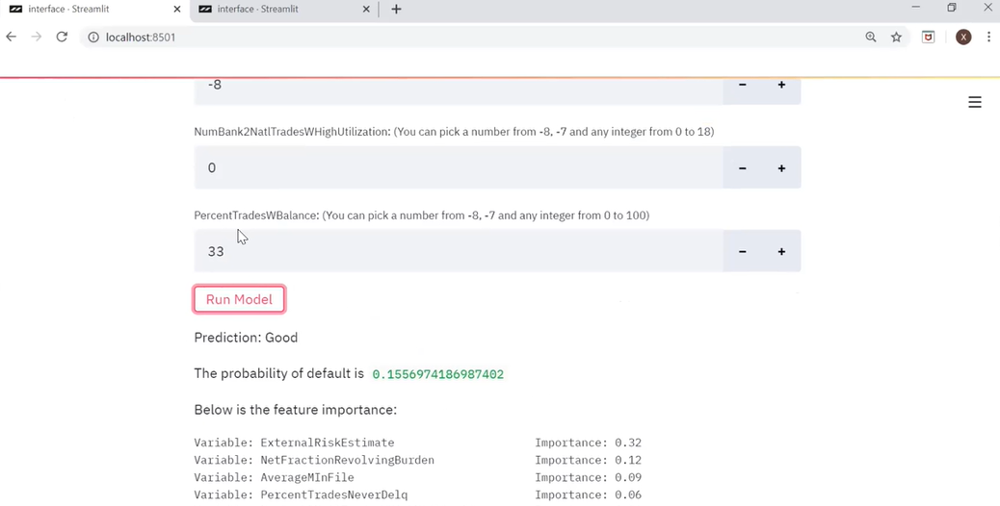

Code of FICO Explanable Machine Learning Challenge

Data exploring
import numpy as np
import pandas as pd
from sklearn.impute import SimpleImputer
from sklearn.preprocessing import OneHotEncoder
import os
import pickle
raw = pd.read_csv('heloc_dataset_v1.csv', na_values = [-9])
# raw = pd.read_csv('heloc_dataset_v1.csv')
#### transform target
raw.loc[raw['RiskPerformance'] == 'Good', 'RiskPerformance'] = 1
raw.loc[raw['RiskPerformance'] == 'Bad', 'RiskPerformance'] = 0
#### transforming data
# see = raw[raw.isnull().any(axis=1)]
data = raw.copy(deep=True)
data.dropna(axis=0, inplace=True)
data.reset_index(drop=True, inplace=True)
imputer_mode = SimpleImputer(missing_values=-8, strategy='most_frequent')
data_y = data.pop('RiskPerformance')
data_X_impute = pd.DataFrame(imputer_mode.fit_transform(data), columns=data.columns, index=data.index)
data_X_impute.insert(0, 'RiskPerformance', data_y)
data = data_X_impute.copy(deep=True)
# data.loc[data['MSinceMostRecentDelq'] == -7, 'MSinceMostRecentDelq'] = max(data['MSinceMostRecentDelq'])
# data.loc[data['MSinceMostRecentInqexcl7days'] == -7, 'MSinceMostRecentInqexcl7days'] = max(data['MSinceMostRecentInqexcl7days'])
data.replace(-7, 0, inplace=True)
#### build dummies for cat
cat_var = data.loc[:, ['MaxDelq2PublicRecLast12M', 'MaxDelqEver']]
data.drop(['MaxDelq2PublicRecLast12M', 'MaxDelqEver'], axis=1, inplace=True)
encoder_MaxDelq2 = OneHotEncoder()
MaxDelq2 = encoder_MaxDelq2.fit_transform(cat_var.iloc[:, 0].values.reshape(-1, 1)).toarray()
MaxDelq2_Cols = []
for i in range(0, 9):
col = 'MaxDelq2PublicRecLast12M_' + str(i)
MaxDelq2_Cols.append(col)
MaxDelq2_df = pd.DataFrame(MaxDelq2, columns=MaxDelq2_Cols)
MaxDelq2_df.drop('MaxDelq2PublicRecLast12M_0', axis=1, inplace=True)
encoder_MaxDelqEver = OneHotEncoder()
MaxDelqEver = encoder_MaxDelqEver.fit_transform(cat_var.iloc[:, 1].values.reshape(-1, 1)).toarray()
MaxDelqEver_Cols = []
for i in range(2, 9):
col = 'MaxDelqEver_' + str(i)
MaxDelqEver_Cols.append(col)
MaxDelqEver_df = pd.DataFrame(MaxDelqEver, columns=MaxDelqEver_Cols)
MaxDelqEver_df.drop('MaxDelqEver_2', axis=1, inplace=True)
dummy_var = pd.get_dummies(cat_var, columns=['MaxDelq2PublicRecLast12M', 'MaxDelqEver'])
# dummy_var.insert(5,'MaxDelq2PublicRecLast12M_5_6', dummy_var.iloc[:, 6] + dummy_var.iloc[:, 7])
# dummy_var.drop(['MaxDelq2PublicRecLast12M_5.0', 'MaxDelq2PublicRecLast12M_6.0'], axis=1, inplace=True)
MaxDelq2_df.insert(5,'MaxDelq2PublicRecLast12M_5_6', MaxDelq2_df.iloc[:, 6] + MaxDelq2_df.iloc[:, 7])
MaxDelq2_df.drop(['MaxDelq2PublicRecLast12M_5', 'MaxDelq2PublicRecLast12M_6'], axis=1, inplace=True)
data_final = pd.concat([data, MaxDelq2_df, MaxDelqEver_df], axis=1)
data_final.to_csv('data_set_cleaned_v4.csv', index=False)
pickle.dump(imputer_mode, open('imputer_mode.sav', 'wb'))
pickle.dump(encoder_MaxDelq2, open('OneHot_MaxDelq2.sav', 'wb'))
pickle.dump(encoder_MaxDelqEver, open('OneHot_MaxDelqEver.sav', 'wb'))
Model Tuning
import pandas as pd
import numpy as np
from sklearn.model_selection import train_test_split
from sklearn.linear_model import LogisticRegression
from sklearn.ensemble import RandomForestClassifier
from sklearn import neighbors
from sklearn.model_selection import GridSearchCV
from sklearn.metrics import accuracy_score
from sklearn.svm import SVC
import pickle
pd.options.display.max_columns = None
# read data
data = pd.read_csv('data_set_cleaned_v4.csv')
# partitioning
y = data.pop('RiskPerformance')
X = data
X_train, X_test, y_train, y_test = train_test_split(X, y, test_size=0.25, random_state=323)
# Random Forest Classifier
rfmodel = RandomForestClassifier()
rf_grid = [{'n_estimators': [x for x in range(21, 31)], 'max_features': [x for x in range(2, 11)],
'max_depth':[x for x in range(3, 11)]}]
grid_search = GridSearchCV(rfmodel, rf_grid, cv=5, scoring='accuracy')
grid_search.fit(X_train, y_train)
rf_best = grid_search.best_estimator_
rf_best_score = grid_search.best_score_
print('random forest done')
# Logistic Regression
lrmodel = LogisticRegression()
lr_grid = [{'penalty': ['l1', 'l2'], 'C': np.logspace(-4, 4, 20),
'solver': ['liblinear']}]
grid_search = GridSearchCV(lrmodel, lr_grid, cv=10, scoring='accuracy')
grid_search.fit(X_train, y_train)
lr_best = grid_search.best_estimator_
lr_best_score = grid_search.best_score_
print('logistic regression done')
# KNN
knnmodel = neighbors.KNeighborsClassifier()
knn_grid = [{'n_neighbors': [x for x in range(1, 22, 2)]}]
grid_search = GridSearchCV(knnmodel, knn_grid, cv=10, scoring='accuracy')
grid_search.fit(X_train, y_train)
knn_best = grid_search.best_estimator_
knn_best_score = grid_search.best_score_
print('KNN done')
# SVM
SVCmodel = SVC()
SVC_grid = [{'C': [0.01, 0.1, 1], 'kernel': ['linear']},
{'kernel': ['rbf'], 'C':[0.01, 0.1, 1, 10],
'gamma': [1, 0.1, 0.01, 0.001]}]
grid_search = GridSearchCV(SVCmodel, SVC_grid, cv=5, scoring='accuracy')
grid_search.fit(X_train, y_train)
SVC_best = grid_search.best_estimator_
SVC_best_score = grid_search.best_score_
print('SVM done')
# training whole training data
best_model = rf_best
best_model.fit(X_train, y_train)
y_test_pred = best_model.predict(X_test)
best_model_accuracy = accuracy_score(y_test, y_test_pred)
print(best_model_accuracy)
# model output
best_model.fit(X, y)
pickle.dump(best_model, open('best_model_rf.sav', 'wb'))
# see random forest feature significance
names = X.columns
print(sorted(zip(map(lambda x: round(x, 4), best_model.feature_importances_), names), reverse=True))
importances = list(best_model.feature_importances_)
feature_importances = [(feature, round(importance, 2)) for feature, importance in zip(names, importances)]
feature_importances = sorted(feature_importances, key = lambda x: x[1], reverse = True)
[print('Variable: {:40} Importance: {}'.format(*pair)) for pair in feature_importances]
Interface
import streamlit as st
import pandas as pd
import numpy as np
import pickle
st.title('Risk Prediction')
dic = {0: 'Bad', 1: 'Good'}
data= pd.read_csv('heloc_dataset_v1.csv')
X=data.iloc[:,1:]
n=X.shape[1]
input=pd.DataFrame()
for i in range(n):
name= X.columns[i]
max=X.iloc[:,i].max()
header = name + ': (You can pick a number from -8, -7 and any integer from 0 to ' + str(max)+ ')'
num = st.number_input(header,step=1)
input[name] = [num]
impute = pickle.load(open('imputer_mode.sav', 'rb'))
encoder_MaxDelqEver = pickle.load(open('OneHot_MaxDelqEver.sav', 'rb'))
encoder_MaxDelq2 = pickle.load(open('OneHot_MaxDelq2.sav', 'rb'))
bestmodel = pickle.load(open('best_model_rf.sav','rb'))
input_imputed = pd.DataFrame(impute.transform(input), columns=input.columns, index=input.index)
input = input_imputed.copy(deep=True)
MaxDelq2 = encoder_MaxDelq2.transform(input['MaxDelq2PublicRecLast12M'].values.reshape(-1, 1)).toarray()
MaxDelqEver = encoder_MaxDelqEver.transform(input['MaxDelqEver'].values.reshape(-1,1)).toarray()
MaxDelq2_Cols = []
for i in range(0, 9):
col = 'MaxDelq2PublicRecLast12M_' + str(i)
MaxDelq2_Cols.append(col)
MaxDelq2_df = pd.DataFrame(MaxDelq2, columns=MaxDelq2_Cols)
MaxDelq2_df.drop('MaxDelq2PublicRecLast12M_0', axis=1, inplace=True)
MaxDelqEver_Cols = []
for i in range(2, 9):
col = 'MaxDelqEver_' + str(i)
MaxDelqEver_Cols.append(col)
MaxDelqEver_df = pd.DataFrame(MaxDelqEver, columns=MaxDelqEver_Cols)
MaxDelqEver_df.drop('MaxDelqEver_2', axis=1, inplace=True)
MaxDelq2_df.insert(5,'MaxDelq2PublicRecLast12M_5_6', MaxDelq2_df.iloc[:, 6] + MaxDelq2_df.iloc[:, 7])
MaxDelq2_df.drop(['MaxDelq2PublicRecLast12M_5', 'MaxDelq2PublicRecLast12M_6'], axis=1, inplace=True)
input.drop(['MaxDelq2PublicRecLast12M', 'MaxDelqEver'], axis=1, inplace=True)
input_clean = pd.concat([input, MaxDelq2_df, MaxDelqEver_df], axis=1)
if st.button('Run Model'):
res = bestmodel.predict(input_clean)
st.write('Prediction: ', dic[res[0]])
prob= bestmodel.predict_proba(input_clean)
st.write('The probability of default is',prob[0][0])
# important= bestmodel.feature_importances_()
# st.write('The importance of features is',important)
st.write('Below is the feature importance:')
st.text('''
Variable: ExternalRiskEstimate Importance: 0.32
Variable: NetFractionRevolvingBurden Importance: 0.12
Variable: AverageMInFile Importance: 0.09
Variable: PercentTradesNeverDelq Importance: 0.06
Variable: NumBank2NatlTradesWHighUtilization Importance: 0.06
Variable: MSinceOldestTradeOpen Importance: 0.05
Variable: MSinceMostRecentInqexcl7days Importance: 0.04
Variable: PercentTradesWBalance Importance: 0.04
Variable: MaxDelqEver_8 Importance: 0.04
Variable: NumSatisfactoryTrades Importance: 0.03
Variable: NumTrades60Ever2DerogPubRec Importance: 0.03
Variable: MSinceMostRecentDelq Importance: 0.02
Variable: NumTotalTrades Importance: 0.02
Variable: MaxDelq2PublicRecLast12M_7 Importance: 0.02
Variable: PercentInstallTrades Importance: 0.01
Variable: NumInqLast6M Importance: 0.01
Variable: NetFractionInstallBurden Importance: 0.01
Variable: NumRevolvingTradesWBalance Importance: 0.01
Variable: MaxDelq2PublicRecLast12M_4 Importance: 0.01
Variable: MSinceMostRecentTradeOpen Importance: 0.0
Variable: NumTrades90Ever2DerogPubRec Importance: 0.0
Variable: NumTradesOpeninLast12M Importance: 0.0
Variable: NumInqLast6Mexcl7days Importance: 0.0
Variable: NumInstallTradesWBalance Importance: 0.0
Variable: MaxDelq2PublicRecLast12M_1 Importance: 0.0
Variable: MaxDelq2PublicRecLast12M_2 Importance: 0.0
Variable: MaxDelq2PublicRecLast12M_3 Importance: 0.0
Variable: MaxDelq2PublicRecLast12M_5_6 Importance: 0.0
Variable: MaxDelq2PublicRecLast12M_8 Importance: 0.0
Variable: MaxDelqEver_3 Importance: 0.0
Variable: MaxDelqEver_4 Importance: 0.0
Variable: MaxDelqEver_5 Importance: 0.0
Variable: MaxDelqEver_6 Importance: 0.0
Variable: MaxDelqEver_7 Importance: 0.0''')
note1=pd.read_excel('8f3c89894ce48371.xlsx', sheetname='Data Dictionary')
st.write('Below is a Data Dictionary:')
st.table(note1.iloc[:24,:])
note2=pd.read_excel('8f3c89894ce48371.xlsx', sheetname='Max Delq')
st.write('Below is a Categorical Variable Explanation:')
st.write('(1)MaxDelq2PublicRecLast12M')
st.table(note2)
note3=pd.read_excel('8f3c89894ce48371.xlsx', sheetname='Sheet1')
st.write('(2)MaxDelqEver')
st.table(note3)
note4=pd.read_excel('8f3c89894ce48371.xlsx', sheetname='SpecialValues')
st.write('Below is a Special Values Explanation:')
st.table(note4)